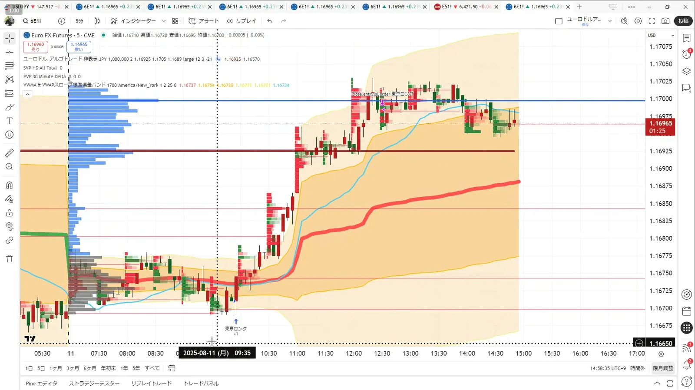
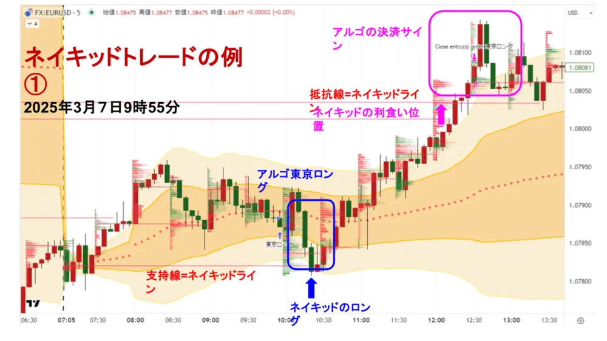
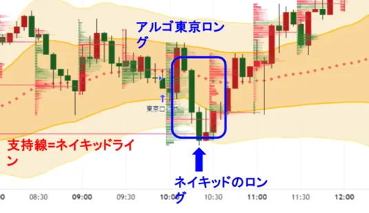

まずは無料ビデオ講座から
トレードLabで学ぶ「ネイキッドトレード」の考え方を、全4回の無料ビデオ講座「ディープインサイド」でお伝えしています。メールアドレスをご登録いただくと、すぐにご覧いただけます。
＼メール登録で特典プレゼント中／
無料ビデオ講座を受け取る
価格ではなく「出来高」で判断する
外国為替市場の取引の大半は、貿易や旅行などにともなう両替、つまり「実需」です。FXのような証拠金取引は、市場全体から見ればごく一部にすぎません。
ネイキッドトレードは、この実需をもとに相場の方向性を判断し、実際に取引が成立した量である「出来高」をもとに売買のポイントを決める手法です。
直近の高値・安値やチャートパターン、移動平均線のように「価格」だけを見る分析は、人によって判断が分かれがちです。一方、ある時間帯に最も取引が多かった価格は一つしかありません。出来高を使うことで、誰が見ても同じ場所に注目できる、迷いの少ない判断ができます。

チャートには、その時間帯で最も出来高が多かった価格に、水平線が自動で引かれます。これが「ネイキッドライン」です。一般的なトレーダーが直近の高値や安値に引く水平線の代わりに、支持線・抵抗線として使います。目で見て線を引く必要はありません。
講師が実際に使っているチャートの設定（アルゴシステム、ネイキッドライン、V-wapなど）は、「相乗りチャート」として会員の方にそのままご提供しています。

アルゴシステムは、実需をもとに相場の方向性を判断し、サインでお知らせするシステムです。TradingView（トレーディングビュー）上で動き、スマホにも通知が届くので、外出先でも見逃しません。
| サイン | エントリー | 決済の目安 |
|---|---|---|
| アルゴ東京 | 9時55分 | 12時30分〜14時 |
| アルゴロンドン7 | 15時（冬時間は16時） | 16時〜17時（冬時間は17時〜18時） |
| アルゴロンドン8 | 16時または17時 （冬時間は17時または18時） | 17時〜21時 （冬時間は18時〜22時） |
※相場の状況により、サインが1回だけの日や、出ない日もあります。
勝率69.63%
| 期間 | 獲得pips | トレード回数 | 勝率 | プロフィット ファクター | リスク リワード |
|---|---|---|---|---|---|
| 390.9pips | 84回 | 66.67％ | 4.21 | 2.24 | |
| 8月 | 0pips | — | — | — | — |
| 9月 | 131.3pips | 19回 | 73.68% | 6.23 | 2.23 |
| 10月 | 68.7pips | 19回 | 47.37% | 2.77 | 3.07 |
| 11月 | 65.4pips | 24回 | 62.50% | 2.45 | 1.47 |
| 12月 | 125.5pips | 22回 | 81.82% | 10.96 | 2.44 |
| 520.2pips | 205回 | 69.76％ | 3.02 | 1.40 | |
| 1月 | 69.2pips | 22回 | 68.18% | 3.24 | 1.51 |
| 2月 | 65.2pips | 20回 | 75.00% | 3.79 | 1.26 |
| 3月 | 72.8pips | 15回 | 93.33% | 49.53 | 3.54 |
| 4月 | 17.2pips | 29回 | 62.07% | 1.32 | 0.81 |
| 5月 | 77.2pips | 20回 | 75.00% | 7.03 | 2.34 |
| 6月 | 25.3pips | 13回 | 53.85% | 2.30 | 1.97 |
| 7月 | 50.9pips | 19回 | 63.16% | 2.41 | 1.41 |
| 8月 | 30.3pips | 18回 | 66.67% | 1.90 | 0.95 |
| 9月 | 53.9pips | 15回 | 66.67% | 3.22 | 1.61 |
| 10月 | 24.2pips | 15回 | 80.00% | 4.18 | 1.05 |
| 11月 | 18.6pips | 5回 | 80.00% | 4.00 | 1.00 |
| 12月 | 15.4pips | 14回 | 64.29% | 2.86 | 1.59 |
| 359.0pips | 130回 | 79.23％ | 4.41 | 1.15 | |
| 1月 | 33.4pips | 20回 | 80.00% | 5.28 | 1.32 |
| 2月 | 22.1pips | 17回 | 70.59% | 2.32 | 0.96 |
| 3月 | — | — | — | — | — |
| 4月 | 68.8pips | 12回 | 75.00% | 4.98 | 1.66 |
| 5月 | — | — | — | — | — |
| 6月 | — | — | — | — | — |
| 7月 | 64.4pips | 10回 | 90.00% | 8.08 | 0.9 |
| 8月 | 49.9pips | 24回 | 79.17% | 3.19 | 0.84 |
| 9月 | 34.9pips | 14回 | 71.43% | 4.36 | 1.74 |
| 10月 | 32.8pips | 14回 | 85.71% | 4.45 | 0.74 |
| 11月 | 29.9pips | 10回 | 90.00% | 9.08 | 1.01 |
| 12月 | 22.8pips | 9回 | 77.78% | 3.85 | 1.1 |
| 95.7pips | 38回 | 84.21％ | 6.29 | 1.18 | |
| 1月 | 37.4pips | 13回 | 92.30% | 14.85 | 1.24 |
| 2月 | 19.7pips | 15回 | 66.67% | 2.28 | 1.14 |
| 3月 | 38.6pips | 10回 | 100.00% | ー | ー |
※上記は講師の過去のトレード実績であり、将来の成果を保証するものではありません。
※負け数には引き分け（同値撤退）を含みます。2025年は3月・5月・6月など、トレードを休んだ月があります。
※表現や再現性には個人差があり、必ずしも利益や効果を保証したものではございません。
トレードLabで学ぶ「ネイキッドトレード」の考え方を、全4回の無料ビデオ講座「ディープインサイド」でお伝えしています。メールアドレスをご登録いただくと、すぐにご覧いただけます。
＼メール登録で特典プレゼント中／
無料ビデオ講座を受け取る